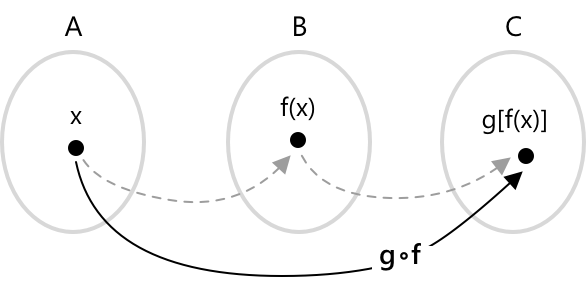

Складені функції
Що таке композиція функцій
Коли ми говоримо про композицію функцій, ми маємо на увазі процес застосування однієї функції до результату іншої. Іншими словами, задано дві функції \( f(x) \) та \( g(x) \), тоді композиція функцій утворюється шляхом обчислення \( g \) від значення \( f \). Це позначається так:
\[ g \circ f= g(f(x)) \]
Це означає, що ми спочатку застосовуємо \( f \) до вхідного значення \( x \), а потім застосовуємо \( g \) до отриманого результату.

Ця діаграма ілюструє концепцію композиції функцій: вхідне значення \( x \) з множини \( A \) спочатку відображається в \( f(x) \) у множині \( B \), а потім \( f(x) \) відображається в \( g(f(x)) \) у множині \( C \), що в результаті дає композицію \( g \circ f \).
Більш формально, нехай задано дві функції \( f(x) \) та \( g(x) \), такі що:
- \(f \colon A \rightarrow B \)
- \(g \colon B \rightarrow C \)
- \(f(A) \subseteq B\)
Композиція функцій визначається наступним чином:
\[ g \circ f \colon x \in A \rightarrow g(f(x)) \in C \]
Це означає, що функція \( g \circ f \) відображає кожен елемент \( x \) в області визначення \( A \) у значення \( g(f(x)) \), за умови, що образ \( f \) міститься в області визначення \( g \).
Приклад
Розглянемо наступні функції:
- \( f(x) = 2x + 3 \)
- \( g(x) = x^2 \)
Ми хочемо визначити композицію функцій \(g \circ f = g(f(x)) \). Почнемо з обчислення \( f(x) \):
\[ f(x) = 2x + 3 \]
Тепер підставимо це в \( g(x) \):
\[ g(f(x)) = g(2x + 3) = (2x + 3)^2 \]
Отже, композиція функцій має вигляд: \[ g \circ f = (2x + 3)^2 \]
Композиція з оберненою функцією
Якщо функція \( f \) компонується зі своєю оберненою \( f^{-1} \), результатом є тотожність, яка відображає кожен елемент множини в самого себе:
\[ f(f^{-1}(x)) = f^{-1}(f(x)) = x \]
Ця операція є правильною лише тоді, коли функція \( f \) є оберненою, тобто вона є однозначною (ін'єктивною) та на покриття (сюр'єктивною) на своїй області визначення.
Коли композиція двох функцій є коректно визначеною, тобто коли значення першої функції лежить в області визначення другої, ми можемо записати:
\[ g(f(x)) \equiv g \circ f \quad \text{та} \quad f(g(x)) \equiv f \circ g \]
Цей запис підкреслює, що композиція функцій не є комутативною: загалом порядок, у якому функції компонуються, впливає на результат, і виконується наступне:
\[ g \circ f \neq f \circ g \]
Приклад
Продемонструємо на простому прикладі, що композиція функцій не є комутативною операцією, тобто, загалом, \( g \circ f \neq f \circ g \). Розглянемо дві функції:
- \( f(x) = e^x \)
- \( g(x) = x + 1 \)
Обчислимо \( f \circ g \): \[ f \circ g = f(g(x)) = f(x + 1) = e^{x + 1} \]
Обчислимо \( g \circ f \): \[ g \circ f = g(f(x)) = g(e^x) = e^x + 1 \]
Маємо:
- \( (f \circ g)(x) = e^{x + 1} = e \cdot e^x \)
- \( (g \circ f)(x) = e^x + 1 \)
Ці вирази не рівні, і це доводить, що композиція функцій не є комутативною.